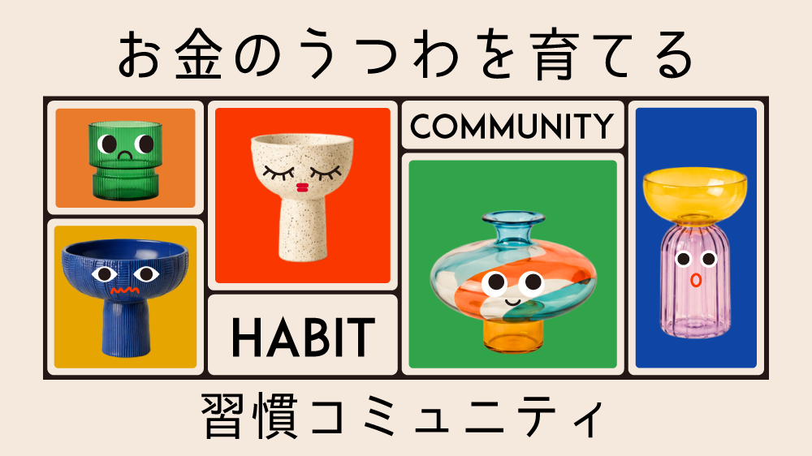

自分の五感センサーを通して感じられるもの。
人はこれを 「現実」 という呼び方で認識している。
自分の意識・感情・直感など。
五感センサーを通して感じられないもの
| 見えないもの（内側） | 見えるもの（外側） | |
|---|---|---|
| 何を指すか | 意識・感情・直感など。 五感で感じられないものすべて | 五感で感じられるもの ＝ 現実 |
| 他人と共有できるか | できない。 人によって捉えているものが違う | 他の人とも 同じものとして指し示せる |
| ワークでは | 喜びの度合い／感情／ なぜそう感じたのか | 数字を見る・買ったもの・ レシートという事実 |
| 変化の速さ | 速い。波のように変わる | 遅い |
| 固定のされ方 | 固定化されない。 戻る・意図しない方向にも変わる | 一度固定化されると 簡単には崩れない |
どんな要素があると、喜びが長続きするのか
買った時はすごく喜んでいたのに、今は思い出せないくらい何も感じない
「私もそれ、やっていいのかな」
「あの人のわがままな感じがすごく嫌」
「めっちゃ気になる」